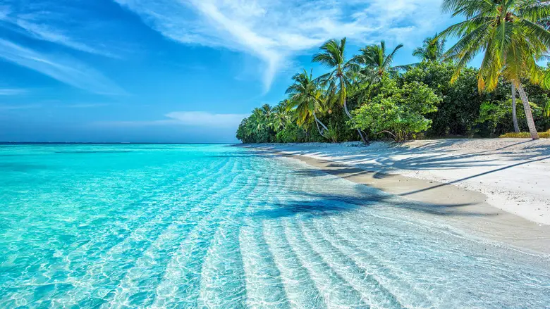
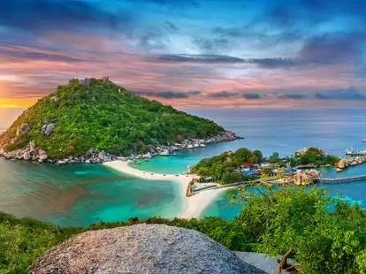
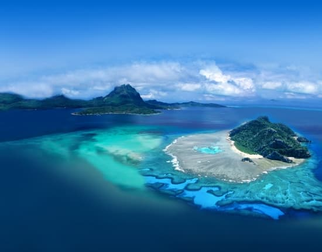
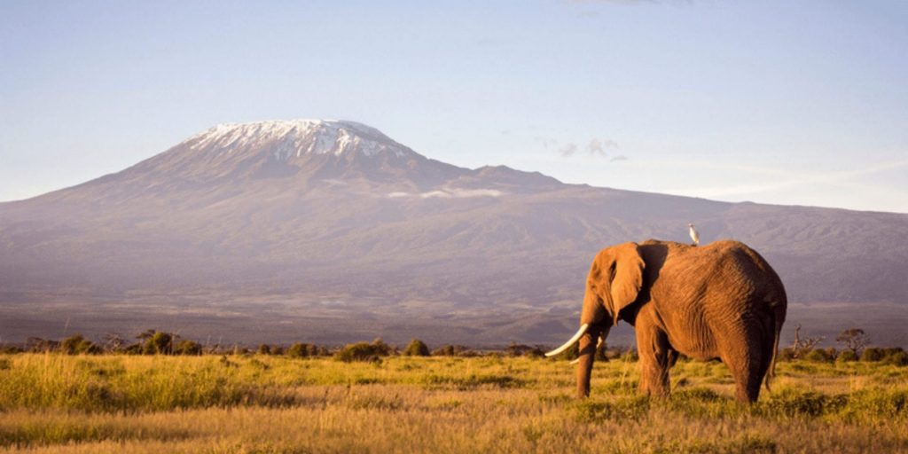
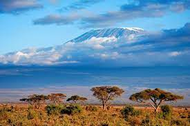
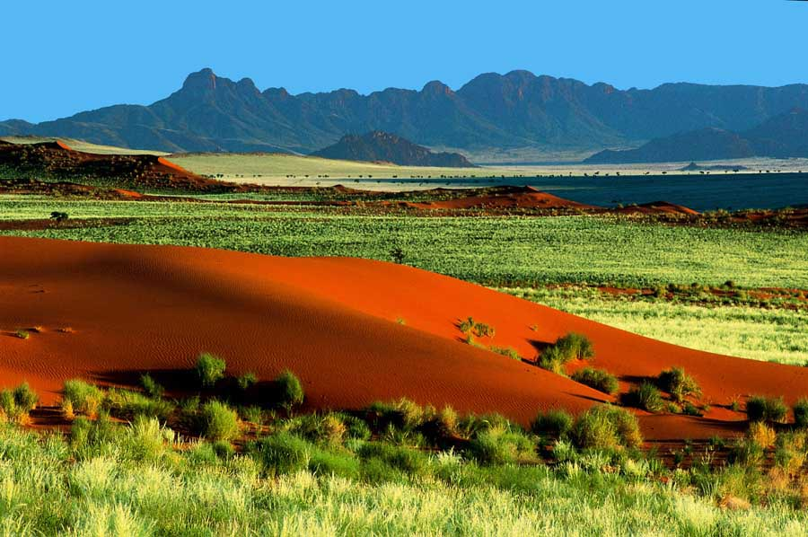

Bienvenue sur mon site !
Je suis heureuse de vous présenter mon blog de voyage " Aventures avec Mai "!
Ce blog est destiné à tous les amoureux de voyage qui cherchent à explorer de nouvelles destinations, à découvrir de nouvelles cultures et à vivre des aventures inoubliables.
Je crois que le voyage est l'une des meilleures manières de découvrir le monde et de se découvrir soi-même, et je suis ravis de vous faire partager mes aventures avec vous.
Rejoignez-moi dans mon exploration du monde et découvrez les merveilles qui nous entourent.
Vous souhaitez vous évadez sur une ile paradiaque loin de tous tracas ? Ou encore réservez un voyage de rêve seul ou accompagné ? Vous êtes au bon endroit !
Je vous partages les destinations les plus paradisiaque que j'ai pu effectuer dans ma vie.
Bora Bora

Bora Bora est une île de la Polynésie française, célèbre pour ses paysages naturels époustouflants, ses plages de sable blanc et ses eaux turquoise cristallines.
Il y a beaucoup à découvrir.
La culture polynésienne est préservée à travers les danses traditionnelles, les tatouages et les arts artisanaux locaux.
Plusieurs activités de plein air, comme la randonnée, la pêche, le jet ski et le paddle sont possibles sur l'île.
de délicieux plats locaux fraîchement préparés à base de poisson et de fruits de mer sont au menu.
Maldives

Les Maldives sont un archipel situé dans l'océan Indien, célèbre pour ses eaux turquoise cristallines, ses plages de sable fin et ses récifs coralliens colorés.
On peut effectuer plusieurs Les activités aquatiques, comme la plongée sous-marine, le snorkeling, le surf et les croisières en bateau pour explorer les atolls.
Profitez des spas de luxe, où vous pourrez vous détendre en prenant un massage traditionnel ou en profitant d'un bain à remous.
Thailand

La Thaïlande est un pays riche en culture, en histoire et en nature.
Les temples bouddhistes, tels que le Wat Arun à Bangkok et le Wat Phra That Doi Suthep à Chiang Mai sont des exemples de l'architecture religieuse thaïlandaise.
Les marchés flottants, tels que le marché flottant de Damnoen Saduak sont à découvrir, où vous pourrez acheter des fruits frais, des légumes et des produits artisanaux locaux.
La nourriture thaïlandaise est célèbre pour sa variété de plats épicés et de fruits de mer fraîchement préparés.
Profitez des plages de sable fin, comme celles de Phuket, Koh Samui et Krabi, où vous pourrez vous détendre, faire de la plongée sous-marine et du snorkeling.
Tahiti

Tahiti est une île de la Polynésie française, célèbre pour ses paysages naturels époustouflants, ses plages de sable blanc et ses eaux turquoise cristallines.
Découvrez les célèbres collines de l'île de Moorea, qui offrent une vue imprenable sur l'océan et les îles voisines.
Les activités de plein air, comme la randonnée, la pêche, le jet ski et le paddle sont pratiqués
De délicieux restaurants proposant des plats locaux fraîchement préparés à base de poisson et de fruits de mer sont à découvrir sur cette île.

Avez vous l'âme d'un aventurier ? Vous aimez la nature ainsi que les animaux ?
Effectuez un safari dans l'une des ces destinations incroyables !
Kenya

Le Kenya est un pays situé en Afrique de l'Est, célèbre pour ses paysages naturels époustouflants, ses animaux sauvages et ses cultures tribales.
Plusieurs parcs nationaux comme celui de Masaï Mara et d'Amboseli offrent l'occasion de voir une grande variété d'animaux sauvages tels que les lions, les éléphants, les girafes, les zèbres et les gnous.
Les cultures tribales dont les Masaïs et les Samburus, sont à découvrir
La capitale Nairobi est à visiter avec ses musées, les parcs nationaux et les centres culturels.
Tanzanie

La Tanzanie est un pays situé en Afrique de l'Est, célèbre pour ses paysages naturels époustouflants, ses animaux sauvages et ses cultures tribales
Beaucoup d'activités en plein air sont à réaliser au Kilimangaro, comme la randonnée, l'escalade, l'équitation et le safari.
Plusieurs villes, comme Dar es Salaam, la capitale, et Stone Town, sont classées patrimoine mondial de l'UNESCO. Des visiter des musées, des parcs nationaux et des centres culturels sont à faire.
Afrique du Sud

L'Afrique du Sud est un pays situé à l'extrémité sud de l'Afrique, célèbre pour ses paysages naturels époustouflants, sa culture riche et sa biodiversité.
Des safaris dans les parcs nationaux, tels que le parc national Kruger, le parc national de Table Mountain et le parc national d'Addo Elephant, sont à réaliser
Vous pourrez vous détendre sur les plages, comme celles de la Garden Route et de la côte de la Dolphin Coast,faire de la plongée sous-marine, du surf et du kitesurf.
L'Afrique du Sud est également réputée pour ses vins de qualité, sa cuisine locale et ses festivals culturels.
Namibie

La Namibie est un pays situé en Afrique australe, célèbre pour ses paysages naturels époustouflants, ses animaux sauvages et ses cultures tribales.
Les safaris sont à effectuer dnas les parcs nationaux, tels que Etosha, Sossusvlei et Skeleton Coast
Les dunes de sable rouge de Sossusvlei sont les plus hautes dunes d'Afrique. Elles offrent une vue imprenable sur les dunes et les montagnes environnantes.
La Namibie est également réputée pour ses vues panoramiques sur les montagnes, les déserts et les savanes, ainsi que pour ses activités de plein air.